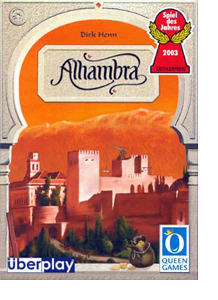

[ Home ] [ Travel ] [ Photography ] [ Pets ] [ Games] [ Rowing] [ Physics ]


All work and no play? No way!
Travel
Cruises
Past Cruises (Diaries)
Future Cruises
Rogues Galleries
Land Trips
Diaries (Land Trips)
Hawai'i - Big Island - 04'01
Hawai'i - Maui - 05'02
Hawai'i - Big Island - 04'03
Hawai'i - Kaua'i - 09'04
Hawai'i - Big Island - 04'06
Hawai'i - Maui - 04'06
Mainland China - 05'07
Phoenix, Arizona - 12'07
Greek Isles - 05'08
Hawai'i - Kaua'i - 09'08
Hawai'i - Big Island - 09'09
Hawai'i - Maui - 05'12
Hawai'i - Big Island - 04'13
Ireland - 08'13
Mexico - Cancun 11'13
France/Belgium/Lux 07'15
Hawai'i - Big Island - 05'17
England / Wales - 06'17
Hawai'i - Big Island - 09'19
Photography
Cameras
Underwater
Pets
Tara
Blackie
Whitey
Muffy
Ollie
Rusty
Fluffy
Rufus&Dufus
Games
Rowing
Physics
I have always enjoyed games - card games, dice games, board games - I like most of them. Recently I was introduced to Catan and have since purchased several "Euro" games. Now I'm hooked. I find these games to be the right level of strategy, luck and outright fun. We have a family get together every weekend and so the games need to be playable with 5 or 6 players. It's interesting how many games are designed for 5 people (Amun-Re, Carcassonne, Puerto Rico, TTR).
However, there are a couple of things that I don't like about some games. The first thing I don't like are games that don't engage all of the players most of the time. I use the "bathroom litmus test" to determine if a game will be engaging or not:
If a player leaps up in the middle of a game and shouts "I have to go to the bathroom", is the response "No problem, your turn isn't for half an hour anyways", or does the game grind to a complete halt?
If the answer is the former (like 4 player Scrabble), then It's going to be boring for most of the time. If it's the latter, then each player is involved in the game (to some level) even when it's someone else's turn. I like that!
The other thing I don't like are games that are designed to eliminate some (or most) of the players as the game progresses (like Monopoly or Risk). Not a lot of fun for the first person out! In fact, I really like games where you are never really out of the game and always have a chance (even if slight) of making a comeback. Some games accomplish this by leaving some or all of the scoring until the game is finished, so the result can be a surprise.
Settlers of Catan
We first played Catan in early 2007, and it really caught on with us. We now play it at least once a week with the family and occasionally with others. It is defintely our favourite game. We started with the basic game (Settlers of Catan) and soon added Seafarers of Catan and then Cities & Knights. As well as getting the expansion packs (for 5 to 6 players), we also obtained the Fishermen of Catan and The Great River expansion sets. Recently, we added the Traders & Barbarians expansion that was released in 2008. In general, we like all of the expansion sets and often play complicated layouts that include many of the features.
We usually play with 5 or 6 players and find that the Special Building Phase helps to engage everyone when it's not your turn. This is a wonderful game and is really worth the money (it is expensive for a board game!). Click here for further information.
Carcassonne
We have played Carcassone many times and really love this game. It is a combination of tile laying and meeple placement, with some interesting strategy as well. We have all of the expansions, most of which we like but some that we don't. We tend to enjoy the expansions that extend the game in length and interest and promote co-operative play, but not the expansions that are attacking like Towers or Princess and Dragon. Because we like a longer game, we generally play with most of the expansion tiles, even if we are not using the expansion rules (eg. we use the tiles that come with the Towers expansion, but not the towers themselves).
We have made one major change to the rules. We found that the element of luck when picking a tile to lay is too great. It is difficult to have a long term strategy when you just can't get the right tile. Hence, we start each player with three tiles in his "hand" and play one, then replace it each turn. The builder allows a second play and replacement. This rule makes it easier to plan your moves ahead and actually speeds the game up too. There is not a lot of other player engagement during a turn, so faster play reduces the wait time.
Rail Baron
I have had Rail Baron for 30 years. It is the 1977 version published by Avalon Hill. Over the years we have played it many times and had a lot of fun with it. The best thing about this game is that even if you don't have a winning position, it is unlikely that you will be bankrupted. I can only remember one occasion when someone lost before the end of the game. I think this is because when players have to travel on someone else's railway (and have a choice), they tend to choose the person with the least money / properties. This balances out the flow of capital between players.
There is a lot of luck in this game and it can be frustrating when awarded a long destination only to roll 3's and 4's. With 4 or 5 people playing, the game takes about 4 hours (or more). Don't play this as a "quick game"! There are many other board maps available on the Web. However, I prefer the original game where everyone knows eactly where each of the cities is. One drawback to this game is that there is little engagement during other players' turns. Hence if AP sets in, it will make it boring for the others.
Puerto Rico
Another recent acquisition is Puerto Rico. We have not played it a lot yet, but I really like it. This game seems to play well with 3, 4 or 5 players, although the complexion of the game changes with more players. I really like the idea of breaking each turn into 6 specific phases and then allowing players to choose the order of the phases (or if they even occur at all). This adds a real twist to the game. During the phases, each player's "turn" is very quick, so everyone is pretty well engaged at all times. There are so many choices of ways to earn money or victory points that there is no clear strategy as to how to win consistently. Also, accumulated victory points are hidden, and other points are only counted at the end of the game, so it is often a surprise who wins. Several times the player who appeared to be winning during the game was actually second or third after the final accounting.
This game is limited to 5 (or fewer) players, and I don't think it could be
easily expanded to 6 players. I found and printed off the expansion
package which includes 13
new buildings and some forest "plantations". We haven't tried these add-ons yet,
but they would add some diversity to the game (although there's quite a bit of
diversity to start with).
Amun-Re
I have always been fascinated by Egyptian history, and have recently visited Luxor, Cairo and Alexandria. I have also taken a university course in Egyptian mythology and hieroglyphics. (I was even able to translate the player cartouches - Berndt, Dirk, Margrit, Imelda and Frans - clearly not Pharaonic names!). This game captures the spirit of ancient Egypt quite nicely. It is like so many others where the player is presented several options in spending the scarce gold currency. An overal strategy is difficult to perceive.
The province auction phase is quite unique and works well. I also like the idea of the two scoring phases (old kingdom, new kingdom). The only rule change we have made is to address the problem of getting (by chance) only poorer provinces in a 2 or 3 player game. In the "old kindom" phase we place 5 random provinces each bidding round and discard the provinces not bid on. In the new kingdom phase we use the regular rules and only use those provinces used in the first round. This tends to even out the balance between rich and poor provinces.
Ticket to Ride
This must be the simplest of the Eurogames that I have played. However, despite it's simplicity, it is a lot of fun. I thought that we would soon tire of it, but not so. It is a great game for newbies too, as it is so easy to learn. The game depends a lot on luck (gotta get those big destinations and the right coloured cards), so everyone has a good chance at winning.The game also goes very quickly, usually less than an hour. You can squeeze 2 or even 3 games of TTR into a Catan time slot, giving 2 or 3 players a chance at being a winner for the evening rather than just one. The only time the game really slows is when someone chooses new destination tickets. It can sometimes be a long process to decide which ones to keep. We speed the game up a bit by allowing subsequent players to continue playing while the original player chooses his tickets - as long as the players are just choosing train cards. Playing track sections must wait as it could influence the player's choice of destinations.
The game comes in several variations - the US, Europe, Switzerland - while even more user-created maps are obtainable from the Web. There are a couple of expansions to the US and Europe boards that add some interest. Each of the different mapboards add a few new twists which adds a little complexity and variety to the game.
Alhambra
 We have played this game several times, but it just hasn't grabbed our interest as much as the other games. It takes a few trys to understand the game and develop a strategy. I have all 5 of the expansion sets, some of which are great and some of which are crappy. I guess that I like the game better than the rest of the gang as whenever I suggest this game I get voted down. Maybe I just need to find some other Alhambra fans.
There is a fair bit of luck in this game - the player who always seems to have the "correct change" or the right coloured money often wins. But, there is also a lot of strategy. Maybe the problem with this game is as follows. If a game is mostly luck, with little possible strategy (like Ticket to Ride), then the winner realizes he was the luckiest player. Likewise when a game is mostly strategy (like chess), then the player with the best strategy will win. However, Alhambra has some great possibilities for strategy, but bad luck can blow that away. It's sort of like playing chess where each player also rolls a pair of dice on his turn and if he rolls boxcars, he loses his queen. That sort of takes away from having a great strategy!
St. Petersburg
I really like this game. We have the 5 player expansion and usually play with 3, 4 or 5 players. The game is fairly complex and I've yet to determine if there is a winning strategy. It depends so much on what the other players do. There is certainly some luck to the game as you can only choose those cards that are available on your turn. However, I think that a good strategy can outweigh the possible bad luck. A key point is to not spend all your money on one phase as you need a balance of cards from each phase in order to win.
One thing that attracted me to this game was that I had visited St. Petersburg twice and found it just fascinating. As in most games, though, the connection between the historical background and the actual play of the game is very minimal. But still, when the Hermitage or Marinski Theatre or Peterhof cards come up, I can say "I've been there" which gives me some minimal sense of satisfaction, even if I'm losing.
Pillars of the Earth
I have read both "The Pillars of the Earth" and "World Without End", so I just had to get this game. There are a lot of names and events from the book, but as usual, the game play is not really connected. Having read the book provides no advantages whatsoever when playing the game. Whereas most games give you a choice of 3 or 4 things you can do (or choose) each turn, this game presents a whole plethera of choices. A lot of the choices are not clearly "better" than any other choice, so players with AP can eat up some serious play time.
We have the 5/6 player expansion and love the extra board. We normally play with 5
players which means that most of the options are chosen each round. I'm not sure what the
best strategy for this game is. There is some luck, but it is mostly strategy as there are many good
choices.
Tigris & Euphrates
Wow, this game is really hard to pin down. It is the most complex of any of the Eurogames I have played, and certainly the most strategic. Because of it's complexity, we have not played it too much, and all of us are struggling to determine just what the strategy is. In the several games we have played, we've only once built a monument, and very seldom attack each other. I'm sure that if any of us played with some experienced players we'd get killed!
I have the new (2008) version of the game, so it includes the "advanced" board as well, with the
extra pieces. However, we have to learn the basic game first! We have not tried the advanced board.
I find that we still refer to the rules a lot as we play, so there is certainly some meat to the game.
Power Grid
Power Grid is our latest game. It seemed to be well rated on the Web, so I took a chance on it.. We have played several games on several maps and really enjoy it. The only negative we have seen is that in the last round, the winner is obvious and no one can stop him. It feels like an anti-climax. I guess we're used to games like TTR where the winner isn't known until the results are tallied, or Catan where a person can make a surprising come-from-behind victory.
The different map boards add a lot of variety to the game. The connection costs vary from map
to map which results in quite and different strategy (and game length!).